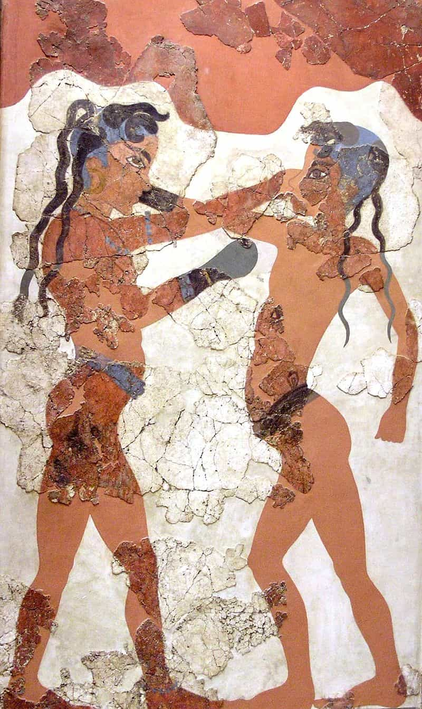
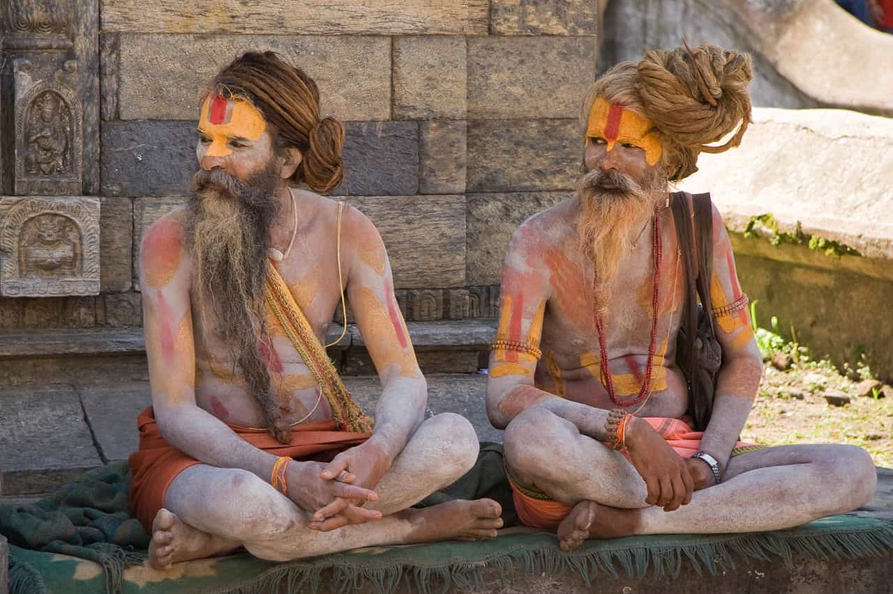
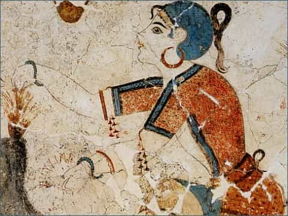

About a year ago, I did an article on the topic of the dread “cultural appropriation”, that longstanding claim that all white culture consists of things “stolen” from noble, benighted People of Color. While that has certainly happened in the past, I discussed several instances in which the reverse is true and people of color appropriated things from the blue-eyed devils.
Since that was a lot of fun, let us go over a few more more examples of cultural appropriation that went from white people to non white people…
1. Dreadlocks

Yes, true believers, the hairstyle known as the dreadlock, often associated with the Rastafarian religious sect, where it is worn to symbolize the Lion of Judah (i.e., the holy lineage ascribed to Menelik I), did not, in fact, originate in Jamaica or any other part of the Caribbean for that matter. And it is here that I must make a clarification in that while this hairstyle was not invented by the black man, it wasn’t entirely invented by white people either, or at the very least, any group of people that folk ethnography would classify as “white”.
The earliest evidence that is known of this hairstyle comes from India, as a matter of a fact, where they are known as jaata and worn by sadhus and hermits and other devotees of Shiva. But speaking of whitey, the Minoans and other ancient Peloponnesians are known to have worn the style as well, as seen in this fresco from Santorini, Greece.
Ancient Egyptians, Hittites, Canaanites, Persians, Israelites, and Armenians were also known to wear the style, as were certain Native American tribes. And while the kinky texture of Afro hair does indeed make the hairstyle substantially easier to form than in straight hair, the lack of combing and washing in the past made even the straight hair of white people substantially more matted. Indeed, something resembling dreadlocks will form if you just leave your hair unwashed and uncombed for a few months.

2. Hoop Earrings
Last year, there was a big controversy about how white women were “appropriating” hoop earrings from black and “Latinx” women. It turns out that, much like dreadlocks, these may not have been invented by white people specifically, but certainly not by those ethnic/racial groups that are today associated with them either.
In fact, hoop earrings are one of the oldest forms of body ornaments that are found in archaeological digs around the world, having been found in Sumerian, Minoan, and Mycenaen sites as early as 2000 BC, and were observed amongst the Ainu people of Japan as early as 500 AD.
Why the near-universal prevalence? If I had to guess, it’s that the concept of “a loop of gold wire through the ears” isn’t a particularly complicated one, and thus multiple groups came up with the idea simultaneously.

3. Rap music
“What?! How could this be?” you might be asking yourself. Am I seriously implying that black people didn’t invent rap music? How dare I do that?
That is not quite what I’m doing with this entry. I am not denying that rap and hip hop music as we know them originated predominantly amongst African-Americans in 1970s New York. What I will point out, however, is that the basic concept of “improvised or pre-written poetry set to music” is hardly a unique concept to one specific group of people. Much like the other two examples that I discussed above, it is fairly universal.
It is speculated by several anthropologists and historians that ancient Greek poets, including the semi-historical Homer, would in fact have needed to recite their poems from memory, since the Greek alphabet as we know it today was invented after many of the ancient epics were first recited.
Secondly, a casual perusal of, say, The Odyssey will note that many phrases like “the rosy fingered dawn” and “the wine dark sea” are repeated throughout the poem. It is speculated that, much like how freestyle rappers will have a “bank” of easily rhymable phrases they commit to memory to use in their songs, these repeated phrases were memory pnemonics to help Homer. Combine that with the probable musical accompaniment that was performed with ancient Greek Poetry, and what you have there is essentially freestyle rapping, done a millenia before the Crucifixion.
And don’t think this is just a Greek thing—pre-colonial Inuits engaged in song duels (battle rapping?), as did ancient tribes in Ghana and Nigeria. Again, I would attribute this to less of a deliberate “appropriating” from one culture to another, and more to the fact that people generally tend to like music and poetry, and putting them together seems like a fairly “bread and butter” concept.
Conclusion
So why did I write this article? Just to thumb the eye of stank-faced PC commissars? Well, yes, but not JUST that—I also wanted to point out how stupid the concept of cultural appropriation is, because many similar cultural practices have existed between wildly divergent cultures, and because said historical research will point out that in many cases cultural appropriation is an inevitable result of cultures coming together.
In other words, if you’re going to demand multiculturalism, you’re pretty much by default going to get “cultural appropriation”, so pick your poison!
Read More: How White Europeans Contributed To African Cultural Identity And Dignity